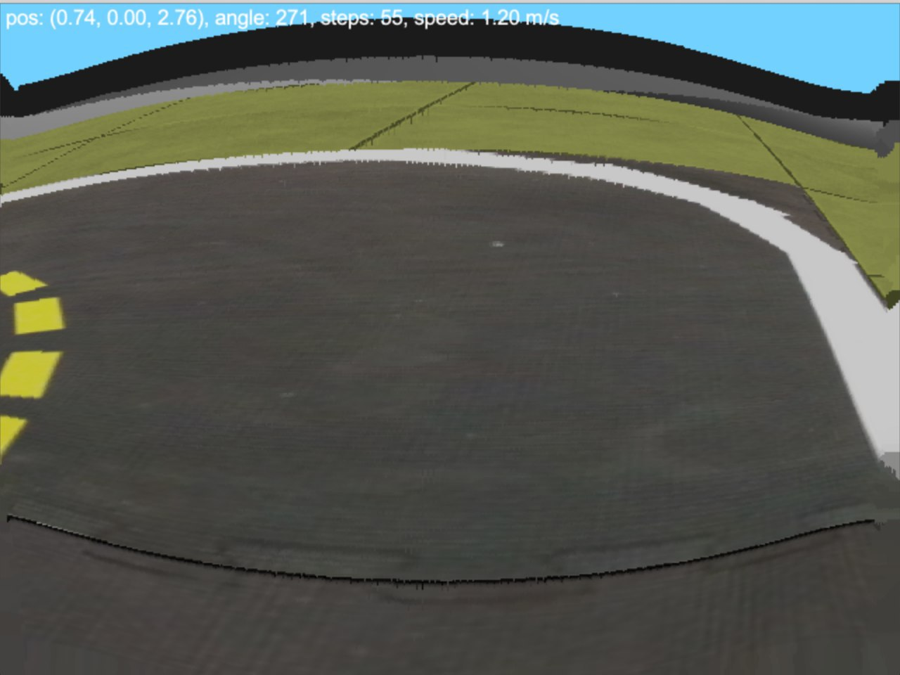
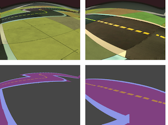

Participated in AIDO-1 and AIDO-2 competitions.
We
took the 4-th place
at the first competition using the end-to-end reinforcement learning
algorithm, and
won the second competition
by integrating a road segmentation
algorithm into a conventional autonomous driving stack.
The code for AIDO-2 is on GitHub.